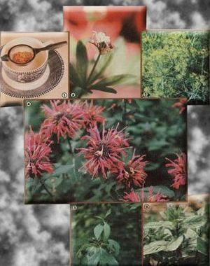

Looking for a healthful summer thirst quencher? Then try a tall, cool glass of . . . tea.
With the return of warm weather, most folks spend a lot of time catching up on the kinds of outside chores that tend to pile up over the winter months . . . and all that physical activity, of course, calls for a little liquid refreshment from time to time. Well, this year, before you reach for whatever beverage is your personal standby, try something a little different! Whether they're served hot or cold, herbal teas-which are occasionally called "tisanes"-are among the tastiest, least expensive, and most healthful thirst quenchers imaginable.
Unlike most domestic and Asiatic teas, which usually contain caffeine, herbal infusions can be made from fresh ingredients that you gather, mix, and prepare yourself. And the do-it-yourself brews generally don't contain the common stimulant.
Of course, herbal teas are available in packaged and bag form, but somehow the beverages' full-bodied flavors taste most appealing when the drinks are created with ingredients gathered from field, forest, or backyard herb garden. In fact, the act of foraging plants for herb teas can itself be a fascinating, rewarding hobby . . . one which will save you money and provide you with a variety of drinks to delight your tastebuds.
Collecting the leaves and flowers of the plants you want to use is the first step in herbal tea production. In most cases it's best to harvest (when the flower buds are fully formed but have not yet unfurled) on a sunny morning after the dew has evaporated. If you wait till midday, you'll lose many of the fragrant oils given off by glands in the stems and leaves, since such delicate secretions are often burned away by the sun.
Once the herbage is harvested, tie it into small, loose clusters and hang up the bunches to dry in the sun for about half an hour . . . then move them to a shaded area. Prolonged exposure to old Sol's rays will, again, drive off some of the plants' flavorful oils and mute the colors of the herbs, as well. (You can, instead, dry herbs in your oven or in a commercial dehydrator . . . as long as you keep the temperature below 120°F to avoid scorching the tender foliage.) As soon as the plants become brittle, carefully remove the leaves and flower buds (the stems can be saved to add aroma to a dresserful of clothes, or to "spice up" a winter fire).
Store the dried blooms and foliage in glass jars with screw-on lids (or in airtight canisters) until you're ready for a cup of tea. Then prepare the herbal tisane as you would any good commercial brew: First crumble the leaves and blossoms a bit with your fingers (to release an extra burst of fresh flavor) then put the "mix" in the bottom of an earthen; ware or china teapot. The commonly accepted formula for tea prescribes one teaspoon of dried herbs for each cup of water. Next, pour boiling water into the pot, and let the infusion steep for five to ten minutes. (You can brew individual servings of herb tea by simply placing a teaspoon of crushed leaves in a strainer spoon-as shown in the photo-or in a tea ball, and pouring boiling water over it right in the cup.)
If you prefer your tea sweetened, just stir in a teaspoon or two of honey . . . and, perhaps, flavor the drink with a squeeze of fresh lemon, orange, or lime. At this time of year, of course, you may want a refreshing cool drink. To chill the tea, merely pour the newly brewed infusion over ice in a tall glass, swirl it until it's cold, and quench that summer thirst!
A GARDEN OF FLAVORS
Many people, knowing of my interest in "foraged" beverages, have asked me which herbs produce the best teas. Well, personal preferences, naturally, have a lot to do with such judgments . . . and the flavor possibilities are limited only by the brewer's imagination. So I suggest that you simply begin by narrowing the choices down to your favorites . . . you'll find that a few herbs won't appeal to you, while many will become featured items on your tea shelf. Some varieties are especially comforting when you're tired or depressed, and the zesty taste of others will provide a refreshing lift on a hot, muggy day.
I'll mention some of my favorites here . . . but you can easily forage for your own discoveries, using a good field guide along with the reference chart that appears on the next page. Just about any herb can be used to prepare an acceptable tea, but you must always make your selections with care: Be sure that any plant you take home is nonpoisonous, that it hasn't been exposed to herbicides or insecticides, and that it was growing at least 100 feet away from well-traveled highways.
Members of the mint family are favorites of many tea drinkers. You can often find these common herbs in moist, open areas (such as low-lying meadows or stream banks). Mint tea usually requires no sweetening or other flavoring, and a cup of the brew can provide a soothing after-dinner drink, one which is said to alleviate digestive problems.
Sassafras-another popular "tea-maker"-will steep up into a powerful tonic that tastes especially fine when served over ice! To make the pungent infusion, you'll need to collect the bark of some young sassafras roots. Look for a usually pyramid-shaped tree with light green, one-, two-, and three-lobed leaves. Dig up a handful of the young roots, wash them thoroughly, and pare off the fragrant bark with a potato peeler. Then steep the strips in the normal manner, or-for a more full-bodied flavorboil them for a few minutes.
Other native herbs that you might like to forage for tea include wild strawberry, lemon balm, tansy, catnip (it's thought to be a good remedy for colic), spicebush, anise, and woodruff. Some of the best flavors, however, result from blending complementary herbs: Strawberry mixed with bee balm creates a savory infusion . . . grated wild ginger root gives a special "zing" to any tea . . . and rose petals add a fragrant aroma to a lemon balm drink. You can also produce interesting variations by putting small amounts of spearmint or peppermint, lavender, and wintergreen in your favorite brand of orange pekoe.
HOMEGROWN HERBS
In addition to foraging for "wild" tea makings, you may already be growing the ingredients for some delicious herb beverages on your windowsill or in your backyard garden. Although they're more often used to enhance the flavor of homecooked dishes, kitchen herbs make delicious teas, too.
Thyme, hyssop, rosemary, and marjoram-all of which are members of the mint family-taste good when brewed alone or in various combinations. Dill makes an excellent afterdinner drink that's rich in minerals, and a sage infusion will sometimes soothe a sore throat. (In fact, long before the introduction of Chinese tea to their continent, Europeans drank sage tea for its alleged ability to ease grief and promote long life!) In your search for flavorful teas, you might also want to taste-test such herbs as horehound and fennel.
As you can see from just the few suggestions I've included in this article, a wholesome tea can be made from about any available herb. So why not declare your independence from those expensive, "caffeinated" tea bags . . . take the family on an herb foraging expedition . . . and brew up some nourishing, fragrant beverages with your dried harvest? You'll find thatwhether you sip them individually or in unusual blends of flavors-herbs will produce low-cost, refreshing drinks that'll quench your thirst at any time of year!
EDITOR'S NOTE: Although most herbal teas are wholesome beverages, some varieties can produce disturbing symptoms if they're taken in excess. In addition, a few herbs contain substances that can be harmful when consumed in large amounts. For those reasons, it's a good idea to limit your intake of any herb-based drink to a cup or so a day . . . and to consult a reliable guide, such as The Rodale Herb Book edited by William H. Hylton ($13.95) or Culpeper's Complete Herbal by Nicholas Culpeper ($9.95). Both titles can be found in many bookstores or libraries, or may be ordered at the prices listed-plus 95 cents for shipping and handling-from Mother's Bookshelf, P.O. Box 70, Hendersonville, North Carolina 28791.
For information on gathering, drying, and brewing herbs for tea, you might also want to read "Make Your Own Herb Teas" in MOTHER NO. 45, page 90 cents (see page 116 for information on ordering back issues). And for a refreshing Spanish tea, turn to page 93 of this issue.
|
 |
|
|